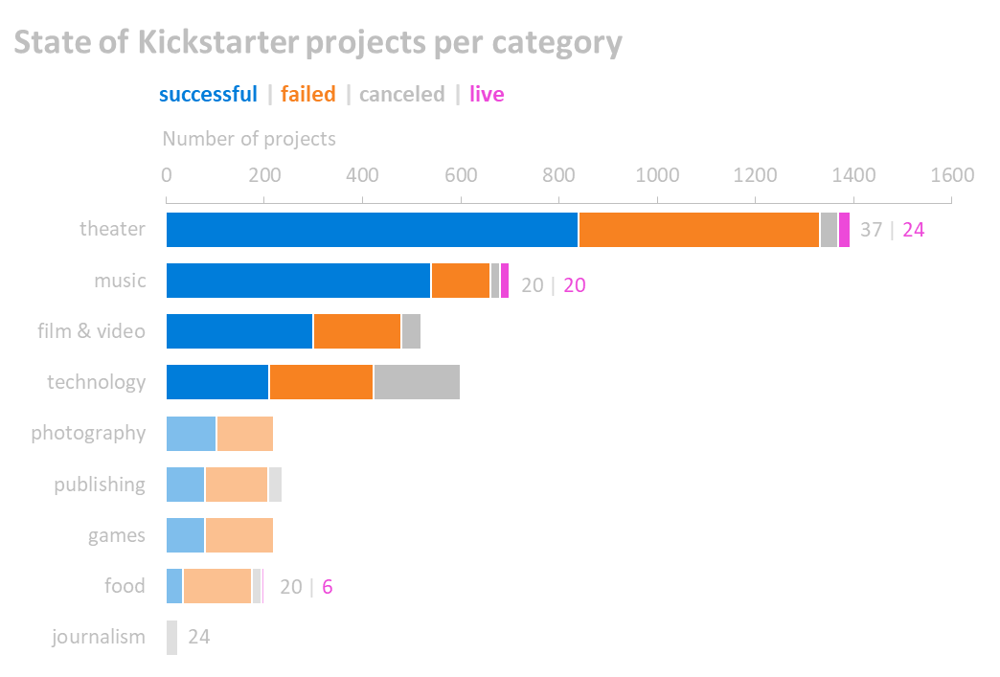

Excel Challenge
This is a mock project that was developed for Data Visualization and Analytics Bootcamp at the University of
Minnesota, Twin Cities. The main objective was to organize and analyze a database of 4,000 past Kickstarter
projects in order to uncover any hidden trends.
Main results
-
State of Kickstarter Projects per category

-
Out of 9 categories, mainly 4 categories have most number of total projects: technology and
performance
arts (theater, music and film & video).
-
Most number of successful projects are observed in theater
-
Only 3 categories currently have projects in live state. 24 in theater, 20 in music and 6 in
food.
Journalism had 24 project cancellation, with zero successful projects.
-
While theater has most number of successful projects, it also saw high number of failed projects
as
compared to the remaining eight categories
-
Technology saw highest number of cancellations of projects, resulting in a total of 178
cancellations.